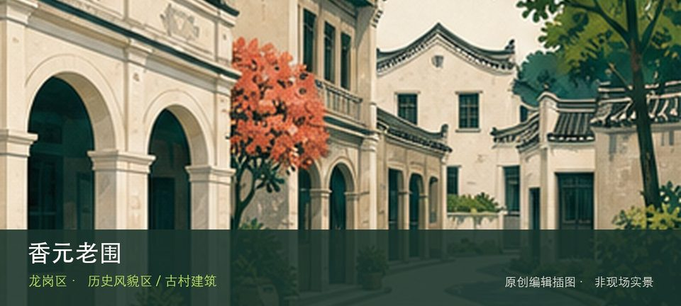

适合谁
适合建筑、地方史和社区观察者；参观时须尊重居民、宗教礼仪与生产秩序。

SHENZHEN GUIDE · 205
龙岗区香元排片区 · 历史风貌区 / 古村建筑
香元老围位于龙岗区香元排片区，传统客家围屋在城市社区中保留门楼、围合院落与宗族空间线索，内部开放以现场为准。现场的空间线索集中在香元老围门楼和客家围合院落，把两者连起来看，才不会只剩一个笼统印象。阅读这处地点要把香元老围门楼与客家围合院落放回仍在使用的街巷或社区中，不把历史空间当成布景。先看公开区域，再按居民生活、礼仪和开放边界调整停留，不进入封闭建筑。
WHY GO
适合建筑、地方史和社区观察者；参观时须尊重居民、宗教礼仪与生产秩序。
第一次到香元老围先把香元老围门楼设为主目标，再视天气和现场边界决定是否前往客家围合院落；返程节点应在出发前确定。
公共交通先到龙岗区香元排片区，再以香元老围公开参观入口为终点；多入口地点须按计划游线选择入口，并预先锁定返程站点。
车辆停在香元老围外围正规公共停车场后步行进入；不驶入窄巷，不占居民门口、作业区或消防通道。
10 月至次年 4 月步行较舒适；夏季避开正午，雨天留意石板、台阶和老建筑周边湿滑。
NEARBY IDEAS
 编辑配图·非现场实景
编辑配图·非现场实景
国际低碳城会展中心位于坪地低碳城，绿色建筑、低碳技术与会展活动构成产业展示窗口，非展会日的公众开放内容与活动日差异很大。
 编辑配图·非现场实景
编辑配图·非现场实景
西湖塘位于园山街道西湖塘片区，首批历史风貌区保留客家聚落的街巷、围屋和山前村落关系，参观以公共通道为限。从西湖塘客家街巷转向山前聚落格局时，地点的空间、历史或使用方式才会变得清楚。
 编辑配图·非现场实景
编辑配图·非现场实景
深圳市龙岗区东江潮红色文化博物馆位于新生社区，以东江地区革命文献、生活物件和地方记忆为专题，适合补充公共纪念馆之外的民间收藏视角。